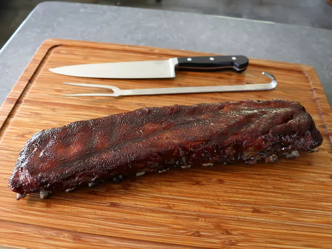

This unique recipe uses the surprising combination of cherry cola and a specialized double-rub technique to create a rack of ribs that rivals any classic Midwest-style barbecue. By layering a tangy wet rub with a smoky dry spice mix, the meat develops a deep, complex base that perfectly complements the slow-roasting process.
The real magic happens during the final hour of cooking, as the ribs are glazed with a homemade reduction of cherry cola, ketchup, and pan juices. This creates a thick, savory sauce that clings to the tender meat, resulting in a "fall-off-the-bone" texture that is surprisingly balanced and not overly sweet.